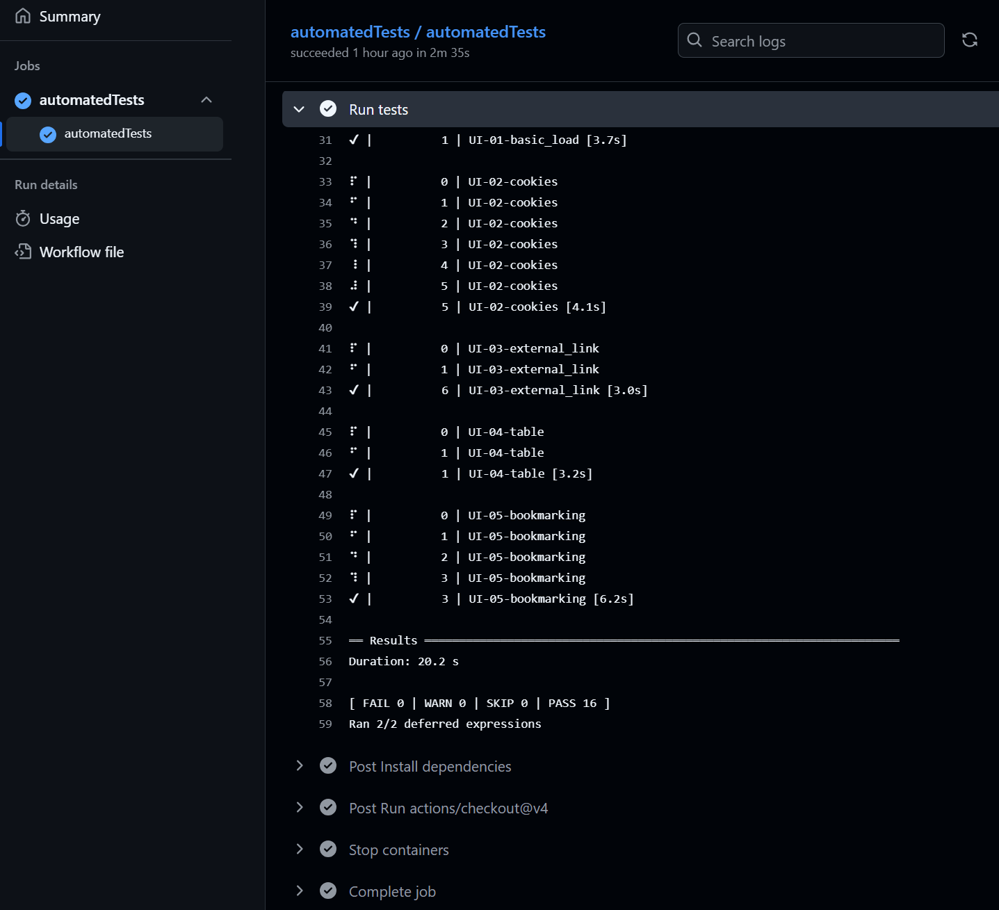

Reusable workflows
reusable-workflows.RmdWe provide several reusable GitHub Actions workflows in dfeshiny (where workflows are automated actions that can be triggered by events such as pull requests in GitHub). These are primarily intended for use with dashboards, but can also be used with other projects hosted on GitHub.
The reusable workflows covered in this article are:
- Automated tests
- Lintr
The dashboard deploy reusable workflow is covered separately in the using the dfeshiny deploy template article.
To implement automated workflows, your repository will require the folder .github/workflows/. You’ll more than likely have this folder, but if not you’ll need to create it.
Automated tests
The automated-tests reusable workflow triggers GitHub Actions to run
shinytest2::test_app() on your repository code. To enable
this, simply copy the following code into a .yaml file in the
.github/workflows/ folder of your repository.
on:
push:
branches:
- main
pull_request:
name: Test dashboard
jobs:
automatedTests:
uses: dfe-analytical-services/dfeshiny/.github/workflows/automated_tests_template.yaml@mainAnd then add > commit > push to your remote GitHub repository.
Once implemented, this will run shinytest2 whenever a
change is made to a pull request or your main branch on GitHub. The
results can be found in the checks section of your pull request and
Actions tab of your repository.
Clicking into a given test result will show the steps taken to run the automated tests and under the Run tests stage, you can find the results of the tests as shown below.

Lintr
The lintr reusable workflow triggers GitHub Actions to run
lintr::lint_dir() on your repository code. This will not
change any of your code, but will produce recommendations of
improvements to code layout and styling. To enable this, simply copy .github/workflows/lintr.yml
to the .github/workflows/ folder of your repository, change the
is_package parameter from true to false, and then add > commit >
push to your remote GitHub repository.
Once set up, lintr will run on your code anytime you create or update a pull request and when anything gets merged into main. Results will be added as comments to the relevant pull request where relevant and also available through the GitHub actions tab in the same way as the shinytest2 results above.